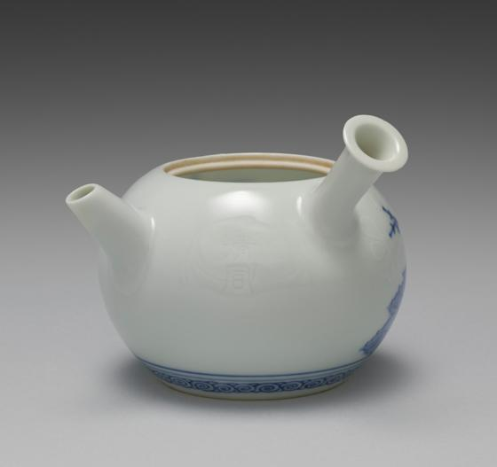
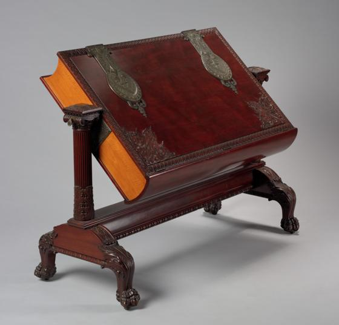
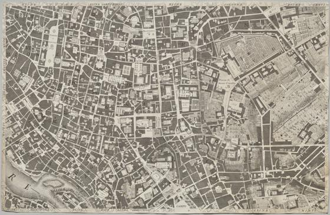
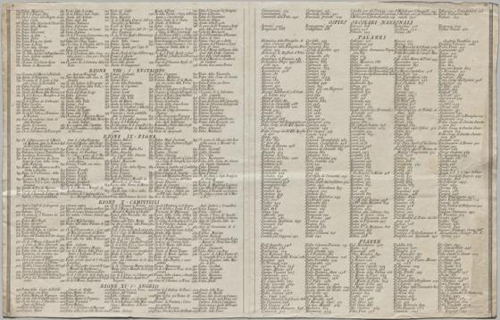
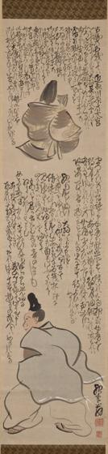
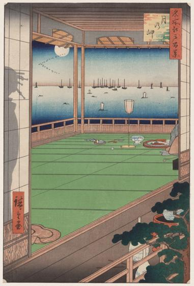

Todo, de un vistazo.
Recórrela en cuadrícula, en mosaico o en línea de tiempo. La barra lateral se llena sola con formatos, tipos, temas y colores.


Un gabinete de curiosidades para tu Mac. Guarda cualquier cosa, no organices nada.
Descargar para MacGratis · 4 MB · macOS 14 o posterior · ¿Es la primera vez que lo abres?
1Qué es
Imágenes, enlaces, citas, capturas, archivos. Pulsa ⌘⇧C y ya está dentro. Sin carpeta que elegir, sin nombre que escribir.
Wunder mira lo que guardas: las palabras de una imagen, lo que aparece en ella, sus colores. Así lo encuentras después sin haberlo archivado nunca.
2Por qué es distinto
Las carpetas te piden decidir dónde va algo antes de saber por qué lo guardaste. Y las cosas acaban en ninguna parte, o en todas.
Wunder se ordena solo, por formato, tipo, tema y color. Y te devuelve lo antiguo, para que lo que guardaste no se quede ahí quieto.
3Cómo funciona
Pruébalo aquí: pulsa ⌘⇧C o haz clic en la tecla de arriba.
4Qué incluye
Qué cabe
De la web, de la cámara o del disco. El texto que contienen se puede buscar.
JPEGPNGHEICWebPGIFTIFFRAWPSDSe reproduce en su sitio al pasar el puntero.
MOVMP4M4VSe muestra como una onda que puedes reproducir.
MP3M4AWAVAIFFFLACEl texto de cada página se puede buscar.
PDFCualquier enlace, con una copia de la página entera para que siga ahí aunque la web desaparezca. Reconoce libros, películas, música, productos y lugares.
URLLas palabras copiadas se convierten en tarjetas que recuerdan de dónde vienen.
TXTRTFHTMLElige una zona o una ventana, y ya está.
⌃⌘⇧CCon su propia vista previa, y se abre en su app.
KeynoteFigmaZIP…Salas
Abre una sala para cada proyecto, cliente o estado de ánimo. Cada una tiene su colección, su portada y sus carpetas, y se sincroniza entre tus Mac con iCloud.


 Actual
Actual


 iCloud
iCloud





Búsqueda
Recórrela en cuadrícula, en mosaico o en línea de tiempo. La barra lateral se llena sola con formatos, tipos, temas y colores.
Una pared que se desliza sola. «Para hoy» elige cada día doce cosas que habías olvidado, y te dice por qué.


Agrupa por formato, tipo, tema o color. Mueve las cosas, traza líneas entre ellas y guarda tres disposiciones a las que volver.


Guarda lo que te llama la atención.
| Wunder | Atlas | Eagle | |
|---|---|---|---|
| Precio | Gratis | 39 US$ | 29,95 US$ |
| Se ordena solo, sin carpetas ni etiquetas | ✓ | – | con reglas |
| Encuentra una imagen describiéndola | ✓ | – | ✓ |
| Te devuelve lo antiguo cada día | ✓ | – | – |
| Un lienzo para ordenar a tu manera | ✓ | ✓ | – |
| Todo se queda en tu Mac | ✓ | ✓ | ✓ |
| También para Windows | – | – | ✓ |
Según la web de cada app, octubre de 2026.
Un lugar en tu Mac para lo que no quieres perder, pero tampoco quieres organizar. Guarda imágenes, páginas web, textos y archivos, entiende qué son y te ayuda a encontrarlos de nuevo.
Wunder aún no está notarizado por Apple, así que la primera vez macOS lo detiene. Abre Ajustes del Sistema → Privacidad y seguridad, baja hasta el final y haz clic en Abrir igualmente. Solo hay que hacerlo una vez.
O, en Terminal: xattr -dr com.apple.quarantine /Applications/Wunder.app
No. Leer el texto de las imágenes, reconocer lo que aparece, los colores, las imágenes parecidas y las preguntas se procesan en tu Mac con las herramientas de Apple. Wunder solo se conecta para leer las páginas que guardas, descargar una vez el modelo de búsqueda por descripción (unos 106 MB, opcional) y comprobar si hay una versión nueva.
No. Recuerda dónde están y los sigue si los mueves. Si prefieres guardar copias, una sala puede guardar cada archivo en una carpeta propia.
Activa la sincronización de una sala y se mueve a iCloud Drive. Cualquier Mac con tu cuenta de Apple puede abrirla. Si dos Mac la cambian a la vez, se conservan los dos cambios.
Un Mac con macOS 14 Sonoma o posterior. Para hacer preguntas a tu colección hace falta Apple Intelligence (macOS 26).
Sí. El código está en GitHub.
Gratis para Mac. Sin cuenta, sin configuración.
Descargar para Mac